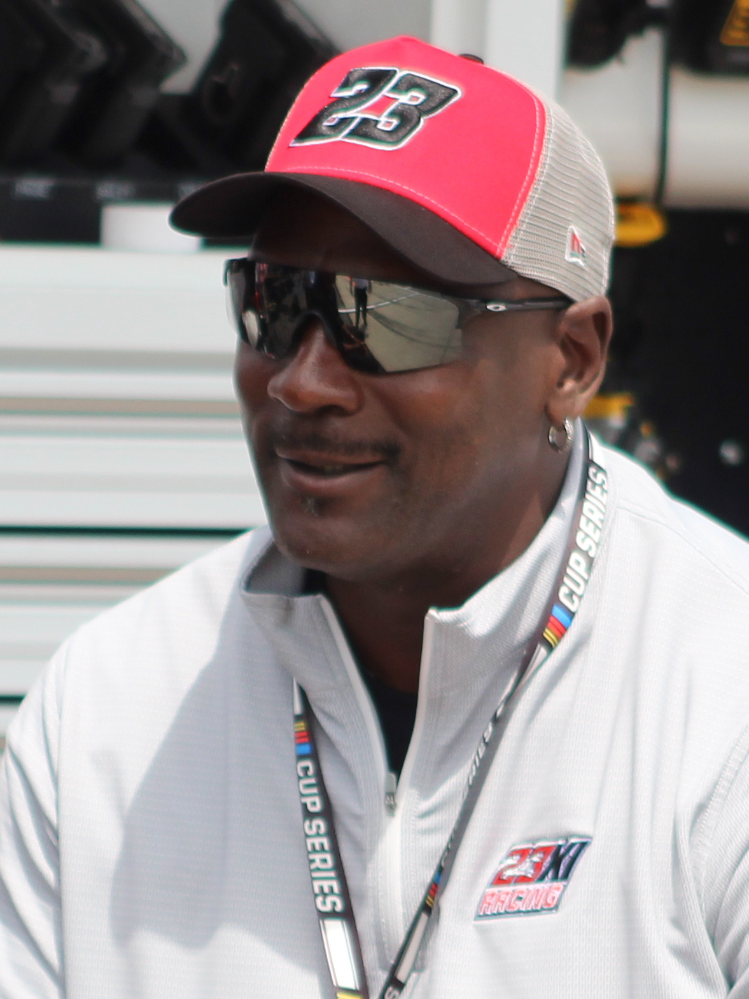

"Air Jordan" | "MJ"
Nascimento: 17 de fevereiro de 1963, Brooklyn (EUA)
Posição: Ala-armador
Times: Chicago Bulls (1984-1993, 1995-1998) e Washington Wizards (2001-2003)
Altura: 1,98 m
Michael Jeffrey Jordan nasceu em Nova York e cresceu em Wilmington, na Carolina do Norte. Quando adolescente, foi cortado do time da escola, e esse episódio se tornou o combustível de uma obsessão: treinar mais do que qualquer outro jogador. Na Universidade da Carolina do Norte, conquistou o título da NCAA em 1982 e marcou a cesta da vitória na final.
Em 1984, foi escolhido pelo Chicago Bulls na terceira posição do Draft e transformou o basquete com seu jogo aéreo, a precisão dos arremessos e uma competitividade implacável. Depois de três títulos consecutivos (1991, 1992 e 1993), afastou-se das quadras e tentou a carreira no beisebol. Voltou em 1995 e comandou os Bulls em mais três títulos (1996, 1997 e 1998), encerrando a dinastia com o inesquecível "Last Shot". Despediu-se da NBA em 2003, no Washington Wizards, e se tornou um dos maiores ícones da história do esporte.
"Eu errei mais de 9.000 arremessos na carreira, perdi quase 300 jogos e 26 vezes fui escolhido para o arremesso da vitória e falhei. Fracassei várias e várias vezes. E é por isso que eu tenho sucesso."
Persistência, trabalho duro e coragem para tentar de novo: o fracasso é apenas parte do caminho.